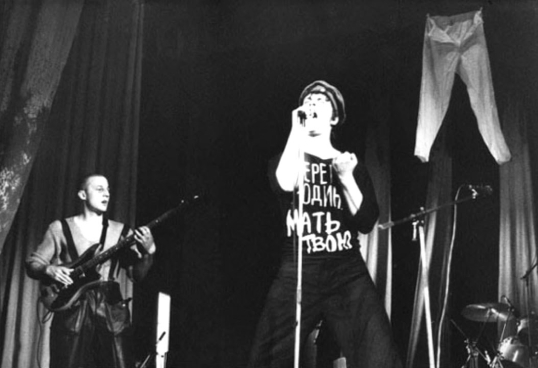
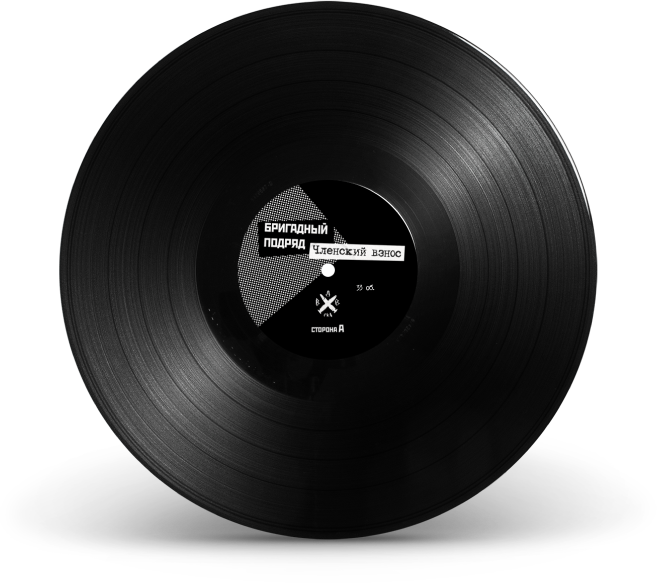

Бригадный Подряд — ленинградская панк группа образовавшаяся весной 1986 года. Весной 1988 года, Бригадный Подряд вступил в Ленинградский рок-клуб и удачно выступил на первом отборочном туре VI фестиваля Ленинградского рок-клуба. В июне 1988 года состоялось самое известное,триумфальное выступление группы на основном туре VI фестиваля Ленинградского рок-клуба. проходившего на Зимнем стадионе. Весной 1989 года гитарист группы Юрий Соболев организовал точку в сквоте НЧ/ВЧ, на базе которой в том же 1989 году весной и осенью был записан альбом «Членский Взнос».
Бригадный подряд - Членский взнос (LP)
В Ленинграде, например, единственная панк-группа — это Бригадный Подряд. Не знаю, что они сами в это вкладывают, но музыкально они настоящие панки.
Егор Летов

Фамилию парня, который импровизировал на саксофоне в Членском взносе узнать практически невозможно, ибо вокалист Коля Михайлов, с присущей ему непосредственностью, просто "зацепил" шедшего по своим делам абсолютно незнакомого парня, который нёс в руках кейс с каким то музыкальным инструментом. Как он уболтал неизвестного, прилично одетого человека на это сомнительное мероприятие, особенно если учесть внешний вид подрядовцев того периода - вопрос к Колиной харизме.

Запись вышла на чёрном виниле в 2016 году.
Треклист
Сторона А:
- Прогулка
- Режь серп, бей молот
- Сенкевич
- Кировский завод
- Кобзон
- Войны для воинов
- Мордобой
- Баден-Баден
- Человеколюбие
Сторона Б:
- Партсъезд
- Мослы-Во!
- Мама-инвалид
- Колыбельная
- Товарищи + Наркоманка
- Трезвость - норма жизни
- Не хочу!
- Деньги
- Кошечка
- Мода полёта
- Органы
- Идиот
Видео
Шестой рокфестиваль ЛРК 1988
Выступление группы на 6-м рокфестивале Ленинградского рок-клуба в 1988 году.